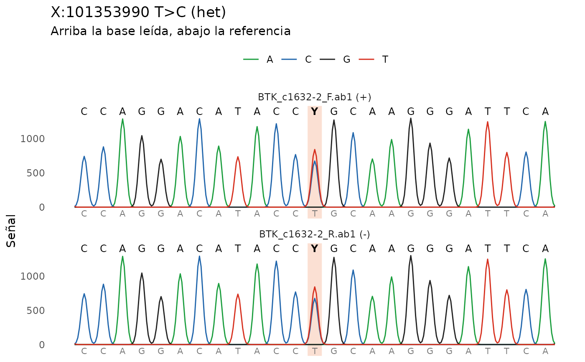

Ubica una o varias lecturas Sanger en el genoma, las alinea contra la
secuencia de referencia y devuelve las diferencias como una tabla de
variantes lista para iei_anotar() e iei_priorizar(). Acepta
cromatogramas .ab1, archivos FASTA o la secuencia escrita directamente.
Usage
iei_sanger(
x,
gen = NULL,
region = NULL,
muestra = "sanger",
sexo = NULL,
build = c("GRCh38", "GRCh37"),
min_calidad = 20,
umbral_het = 0.33,
recorte = 0.01,
cebadores = NULL,
indels_het = TRUE,
cache = tools::R_user_dir("ieiprio", "cache"),
referencia = NULL
)Arguments
- x
Rutas a archivos
.ab1, FASTA o texto, o una secuencia de ADN.- gen
Gen secuenciado. Se usa para bajar la referencia de Ensembl.
- region
Alternativa a
gen: region genomica como"X:101349000-101391000".- muestra
Codigo de la muestra.
- sexo
"M"o"F". En un varon, una variante homocigota en el X fuera de la region pseudoautosomica pasa a ser hemicigota.- build
"GRCh38"o"GRCh37".- min_calidad
Calidad Phred minima de la base para llamar una variante.
- umbral_het
Proporcion minima del segundo pico para llamar un heterocigoto.
- recorte
Error maximo por base del recorte de extremos (algoritmo de Mott). 0.01 equivale a exigir en promedio Phred 20; 0.05 recorta menos.
- cebadores
Opcional, secuencias de los cebadores de la PCR o de la secuenciacion (5' a 3'). Se buscan en la lectura (tolerando 2 diferencias) y se recorta el cebador con lo que queda por fuera, porque esas bases copian al oligonucleotido y no al paciente.
- indels_het
Si
TRUE, cuando una lectura pasa de limpia a picos dobles sostenidos se intenta llamar la insercion o delecion heterocigota probando cada desfase posible (hasta 30 bases) y eligiendo el que explica los picos dobles, como Indigo o Poly Peak Parser. Si ningun desfase explica al menos el 80% de los picos se avisa para revision manual.- cache
Carpeta para guardar la secuencia de referencia, o
FALSE.- referencia
Opcional, la secuencia de referencia sin consultar Ensembl. Puede ser la ruta a un FASTA cuya cabecera trae la region (
>BTK X:101353540-101354439) o una lista consecuencia,inicio(coordenada de la primera base) ychr. El paquete trae la de BTK que usan los ejemplos ensystem.file("extdata", "btk_referencia.fa", package = "ieiprio").
Value
Una tabla como la de iei_leer_vcf() con las columnas extra
lecturas y fuente. En qual va la calidad Phred de la base y en
ab la fraccion de senal del alelo alternativo en el cromatograma. El
atributo ieiprio_sanger guarda, por lectura, el alineamiento, la hebra,
la identidad y las trazas, que usa iei_cromatograma().
Details
Acepta cromatogramas .ab1 y .scf (ver iei_leer_scf()). Con
cromatogramas, cada pico se revisa en las cuatro trazas: si la segunda
senal alcanza umbral_het de la principal, la posicion se considera
heterocigota. Los extremos de baja calidad se recortan antes de alinear.
La lectura puede venir en cualquier hebra; se prueban las dos.
Si das varias lecturas del mismo amplicon (por ejemplo directa y reversa),
las variantes que se repiten se juntan y la columna lecturas dice en
cuantas se vieron.
Examples
ab1 <- iei_ejemplo_sanger("het")
#> Cromatogramas de ejemplo en /tmp/RtmphYR5wI/sanger_1a0857b9014f.
ref <- system.file("extdata", "btk_referencia.fa", package = "ieiprio")
v <- iei_sanger(ab1, gen = "BTK", sexo = "F", referencia = ref)
#> BTK_c1632-2_F.ab1: hebra +, 461 bases alineadas en X:101353757-101354217,
#> identidad 99.8%.
#> BTK_c1632-2_R.ab1: hebra -, 461 bases alineadas en X:101353758-101354218,
#> identidad 99.8%.
v
#> # A tibble: 1 × 16
#> muestra gen chr pos id ref alt genotipo qual dp gq ab
#> <chr> <chr> <chr> <int> <chr> <chr> <chr> <chr> <dbl> <dbl> <dbl> <dbl>
#> 1 sanger BTK X 1.01e8 NA T C het 45 NA NA 0.445
#> # ℹ 4 more variables: filtro <chr>, build <chr>, lecturas <int>, fuente <chr>
# \donttest{
iei_cromatograma(v)

# }